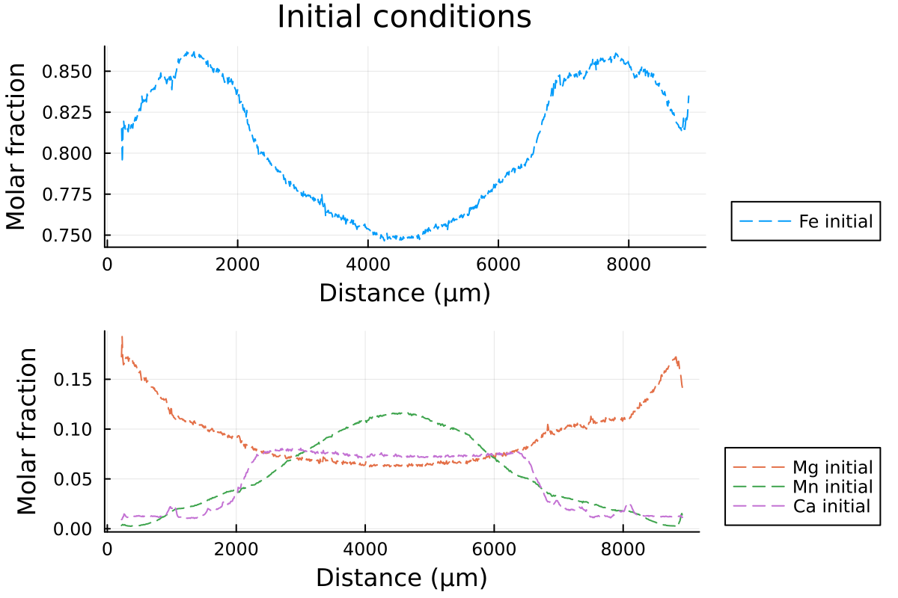

Diffusion in 1D Cartesian coordinates
DiffusionGarnet expects the user to provide real natural data for modelling major element diffusion in garnet. Note that the profiles must be evenly spaced. A set of example data can be found in the repository of the package in the 1D examples section for 1D profile called Data_grt_1D.txt. This is what we will use for this tutorial.
First, we will load the data, which should be in the same folder as your current session:
using DiffusionGarnet # this can take a while
using DelimitedFiles
# load the data of your choice (here from the text file located in https://github.com/Iddingsite/DiffusionGarnet.jl/tree/main/examples/1D, place it in the same folder as where you are running the code)
data = DelimitedFiles.readdlm("Data_Grt_1D.txt", '\t', '\n', header=true)[1]
Mg0 = data[:, 4] # load initial Mg mole fraction
Fe0 = data[:, 2] # load initial Fe mole fraction
Mn0 = data[:, 3] # load initial Mn mole fraction
Ca0 = data[:, 5] # load initial Ca mole fraction
distance = data[:, 1]We can visualize our data:
using Plots
using Printf
l = @layout [a ; b]
p1 = plot(distance, Fe0, label="Fe initial", linestyle = :dash, linewidth=1, dpi=200, title = "Initial conditions", legend=:outerbottomright, linecolor=1,xlabel = "Distance (µm)", ylabel="Molar fraction")
p2 = plot(distance, Mg0, label="Mg initial", linestyle = :dash, linewidth=1, dpi=200,legend=:outerbottomright,linecolor=2,xlabel = "Distance (µm)")
p2 = plot!(distance, Mn0, label="Mn initial", linestyle = :dash, linewidth=1, linecolor=3)
p2 = plot!(distance, Ca0, label="Ca initial", linestyle = :dash, linewidth=1, linecolor=4, ylabel="Molar fraction")
plot(p1, p2, layout = l)which outputs:

Then, we will define 2 structures from the constructors InitialConditions1D and Domain, which will contain all the information DiffusionGarnet needs to run a simulation.
Lx = (data[end,1] - data[1,1])u"µm" # length in x of the model, here in µm
tfinal = 15u"Myr" # total time of the model, here in Myr
# define the initial conditions in 1D of your problem in that order.
IC1D = InitialConditions1D(Mg0, Fe0, Mn0, Lx, tfinal)
# define the pressure and temperature conditions of diffusion
T = 900u"°C"
P = 0.6u"GPa"
# define a Domain struct containing the definition of our problem and nondimensionalised variables
domain1D = Domain(IC1D, T, P)Lx, tfinal, T and P need to contain units, following the syntax of the package Unitful. This allows the user to specify the units that suit their problem.
Domain1D contains all the information that DiffusionGarnet needs to solve our coupled diffusion problem, at 900 °C and 0.6 GPa for a duration of 15 Myr.
This can be achieved with the function simulate():
# solve the problem using DifferentialEquations.jl
sol = simulate(domain1D)which outputs the time spent on the solver, for example, on the second run:
0.399870 seconds (31.93 k allocations: 18.212 MiB)simulate() uses the DifferentialEquations.jl package behind the hood to solve our problem efficiently. The returned variable sol is the common solution type from this package and more information can be found here. It basically holds all the information from our simulation.
We can now plot the solution to our problem.
# extract characteristic time to convert back to dimensional time
@unpack t_charact = domain1D
anim = @animate for i = LinRange(0, sol.t[end], 100)
l = @layout [a ; b]
p1 = plot(distance, Fe0, label="Fe initial", linestyle = :dash, linewidth=1, dpi=200, title = @sprintf("Total Time = %.2f Ma | T = %.0f °C | P = %.1f GPa", i*t_charact, T[1].val, P[1].val), legend=:outerbottomright, linecolor=1,xlabel = "Distance (µm)")
p1 = plot!(distance, sol(i)[:,2], label="Fe",linecolor=1, linewidth=1)
p2 = plot(distance, Mg0, label="Mg initial", linestyle = :dash, linewidth=1, dpi=200,legend=:outerbottomright,linecolor=2,xlabel = "Distance (µm)")
p2 = plot!(distance, Mn0, label="Mn initial", linestyle = :dash, linewidth=1, linecolor=3)
p2 = plot!(distance, Ca0, label="Ca initial", linestyle = :dash, linewidth=1, linecolor=4)
p2 = plot!(distance, sol(i)[:,1], label="Mg",linecolor=2, linewidth=1)
p2 = plot!(distance, sol(i)[:,3], label="Mn", linecolor=3, linewidth=1)
p2 = plot!(distance, 1 .- sol(i)[:,1] .- sol(i)[:,2] .- sol(i)[:,3], label="Ca", linecolor=4, linewidth=1)
plot(p1, p2, layout = l)
end every 1
println("Now, generating the gif...")
gif(anim, "Grt_1D.gif", fps = 7)
println("...Done!")Here is the resulting gif obtained:

It shows the compositional evolution of a 1D profile through a garnet grain with homogeneous Dirichlet boundaries on both sides.